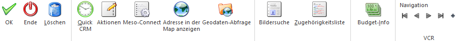

Im Programmbereich…
1 WinLine FAKT
1 Stammdaten
1 Vertreterstammdaten
1 Vertreterstamm
… können die verschiedenen Vertreter bzw. Vertretergruppen definiert werden.
Hinweis
Allgemeine Informationen zu dem Themenbereichen "Vertreter" können dem Kapitel Vertreter - Übersicht entnommen werden.

Die Anlage ist dabei in 5 Register unterteilt, welche in den nachfolgenden Kapiteln detailliert beschrieben werden:
ü Register "Stamm"
In dem Register
"Stamm" kann der allgemeine Typ des Vertreters, sowie weitere zugehörige
Informationen, erfasst werden.
ü Register "Erweitert"
In dem
Register "Erweitert" können Bankdaten für einen Vertreter, sowie Einstellung für
die Rohertragsprüfung hinterlegt werden.
ü Register "Provision"
In dem
Register "Provision" werden die Provisionscodes definiert.
ü Register "Budget"
In dem Register
"Budget" können für jeden Vertreter bis zu zwei unterschiedliche Budgetansätze
verwaltet werden.
ü Register "Zusatz"
In dem Register
"Zusatz" können Zusatzfelder, Eigenschaften und Beziehungen des Vertreters
hinterlegt werden.
Buttons

Ø Ok
Durch Anwahl des Buttons "Ok" bzw. der Taste F5 wird der Vertreter bzw. die Vertretergruppe gespeichert.
Ø Ende
Durch Anwahl des Buttons "Ende" bzw. der Taste ESC wird das Fenster geschlossen und alle nicht gespeicherten Eingaben verworfen.
Ø Löschen
Wird der Vertreter nicht verwendet, so kann dieser mit dem Button "Löschen" gelöscht werden. Soll ein Vertreter gelöscht werden der auch in Vertretergruppen enthalten ist, erfolgt eine Abfrage ob der Vertreter auch aus den jeweiligen Vertretergruppen entfernt werden soll.
Hinweis
Es dürfen keine Vertreterjournalzeilen vorhanden sein bzw. darf der Vertreter in keiner Vertretervorlage hinterlegt sein.
Ø Quick CRM
Wenn dieser Button angeklickt wird, kann ein CRM-Fall zu dem gerade geöffneten Vertreter erfasst werden. Voraussetzung dafür ist:
ü Es muss eine gültige CRM-Lizenz vorhanden sein.
ü Der Benutzer muss ein CRM-Benutzer sein.
ü Es müssen entsprechende CRM-Aktionen bzw. CRM-Workflows mit der Kennzeichnung "QUICK CRM" angelegt sein.
Hinweis
Es werden im WinLine Standard 9 CRM-Aktionen (CRM-Gruppe "100") mitgeliefert.
Ø Aktionen
Durch Anklicken des Buttons "Aktionen" wird ein Kontextmenü geöffnet, in dem verschiedene Aktionen zur Verfügung stehen, die für den Vertreter ausgeführt werden können.
Hinweis
Im Programm "Aktionen" (WinLine START - Parameter - Aktionen) können zu den jeweiligen Aktionen auch CRM-Aktionen bzw. CRM-Startpunkte definiert werden.
Die standardmäßig zur Verfügung stehenden Aktionen haben folgende Funktionen:
ü eMail senden
Der Vertreter wird als
temporäre Kampagne an das Postausgangsbuch (Versandart "Einzel-Mail") zum
Erstellen und Versenden der E-Mail übergeben.
ü  Brief schreiben
Brief schreiben
Es wird das
Postausgangsbuch geöffnet, in dem für den Vertreter ein Serienbrief ausgegeben
werden kann.
ü Fax
Es wird das Postausgangsbuch
geöffnet, in dem für den Vertreter ein Serienfax ausgegeben werden kann.
ü  Telefon 1 anrufen
Telefon 1 anrufen
Wird diese Aktion
gewählt und ist bei dem Vertreter auch eine Telefonnummer eingetragen, wird -
sofern die entsprechenden Voraussetzungen vorhanden sind - die Telefonnummer 1
gewählt.
ü  Mobiltelefon anrufen
Mobiltelefon anrufen
Wird diese Aktion
gewählt und ist bei dem Vertreter auch eine Telefonnummer eingetragen, wird -
sofern die entsprechenden Voraussetzungen vorhanden sind - die
Mobiltelefonnummer gewählt.
Ø Meso-Connect
Durch Anklicken des Buttons "Meso-Connect" wird ein Kontextmenü geöffnet, in dem standardmäßig folgende "Meso-Connect"-Aktionen zur Verfügung stehen:
ü Mail
An den Vertreter kann mit dieser
Aktion eine Mail geschickt werden. Es öffnet sich dazu das Meso-Connect-Mail
Fenster indem die Betreffzeile des Mails sowie ein Text angegeben werden kann.
Weiter besteht noch die Möglichkeit, ein Attachement anzuhängen. Voraussetzung
ist, dass bei dem Vertreter auch eine e-Mail-Adresse vorhanden ist.
ü  Kontakte
Kontakte
Mit dieser Aktion kann ein
Abgleich mit den Microsoft Outlook-Kontakten durchgeführt werden, wobei es 4
unterschiedliche Szenarien geben kann:
ü 1. Der Datensatz ist in Outlook noch nicht vorhanden. In diesem Fall wird der Vertreter neu angelegt.
ü 2. Der Datensatz ist in Outlook bereits vorhanden, in der WinLine wurde eine Änderung durchgeführt. In diesem Fall werden die veränderten Daten an Outlook übergeben.
ü 3. Der Datensatz ist in Outlook bereits vorhanden und wurde dort auch verändert. In diesem Fall werden die veränderten Daten in die WinLine übernommen.
ü 4. Der Datensatz ist in Outlook und in der WinLine bereits vorhanden und wurde auch in beiden bereits verändert. In diesem Fall erfolgt eine Frage, welche der Daten aktualisiert werden sollen.
ü Excel
Damit wird das Programm Microsoft
Excel gestartet und die Adressdaten des Vertreters übergeben.
ü Word
Bei dieser Aktion wird Microsoft
Word gestartete und die Adressdaten des Vertreters übergeben.
ü  StarCalc
StarCalc
Sofern das Programm StarCalc
installiert ist, können die Daten in dieses Programm übergeben werden.
ü  StarWrite
StarWrite
Sofern das Programm StarWrite
installiert ist, können die Daten in dieses Programm übergeben werden.
ü  Wizard
Wizard
Über diesen Eintrag kann der
MESO-Connect Wizard aufgerufen werden, mit dem neue Aktionen erstellt bzw.
bestehende Aktionen verändert werden können.
Ø Adresse in der Map anzeigen
Wenn dieser Button angeklickt wird, wird - sofern eine Internetverbindung vorhanden ist - eine Internetseite geöffnet, in welcher der Standort der gewählten Adresse angezeigt wird.

Hinweis
Wenn im Bereich "Mein Standort" die eigene Adresse eingegeben wird, dann kann auch die Route zum Ziel ermittelt und angezeigt werden. Die Speicherung des eigenen Standorts per Cookie ist auch möglich.
Ø Geodaten-Abfrage
Mit Hilfe von Geodaten kann der Vertreter in der Geo Map des Power Reports dargestellt werden. Durch Anwahl des Buttons "Geodaten-Abfrage" werden hierfür die genauen Geodaten des Vertreters über das Internet ermittelt und abgespeichert. Die Ermittlung findet anhand der folgenden Parameter statt:
ü Straße
ü Postleitzahl
ü Ort
ü Länderkennzeichen (Name des Lands)
Hinweis
Bei der Anlage eines Kontakts werden automatisch ungenaue Geodaten (durch eine in der WinLine vorhandene Koordinatentabelle) ermittelt und zugewiesen. Die Ermittlung findet anhand der folgenden Parameter statt:
ü Postleitzahl
ü Länderkennzeichen
Ø Bildersuche
Mit Hilfe dieses Buttons kann ein Bild für den Vertreter, ausgeschnitten und zugeordnet werden. Hierbei wird zunächst über ein Menü die Quelle des Bilds definiert. Folgende Varianten stehen zur Verfügung:
ü Bildersuche
Es wird das
Programm "Bildersuche" geöffnet.
ü Bildersuche - WinLine
Es wird
das Programm "Bilder in Datenbanken" geöffnet, über welches eine Grafik
ausgewählt werden kann.
ü Bildersuche - Datenträger
Es
wird der Öffnen-Dialog von Windows geöffnet, über welchen eine Grafik ausgewählt
werden kann.
Ø Zugehörigkeitsliste
Durch Anwählen dieses Buttons wird eine Liste ausgegeben in der ersichtlich ist, in welchen Vertretergruppen dieser Vertreter enthalten ist.
Ø Budget-Info
Mit dem Button "Budget-Info" kann eine Übersicht über die Budgetwerte des Vertreters ausgegeben werden.
Ø VCR-Buttons
Über die so genannten VCR-Buttons, welche in jedem Register zur Verfügung stehen, kann durch Mausklick zwischen den Datensätzen geblättert werden.
ü  Damit kann der
erste Datensatz angesprochen werden.
Damit kann der
erste Datensatz angesprochen werden.
ü  Damit kann der
vorherige Datensatz angesprochen werden.
Damit kann der
vorherige Datensatz angesprochen werden.
ü  Damit kann der
nächste Datensatz angesprochen werden.
Damit kann der
nächste Datensatz angesprochen werden.
ü  Damit kann der
letzte Datensatz angesprochen werden.
Damit kann der
letzte Datensatz angesprochen werden.
ü  Damit wird die
nächste freie Nummer für die Neuanlage gesucht.
Damit wird die
nächste freie Nummer für die Neuanlage gesucht.